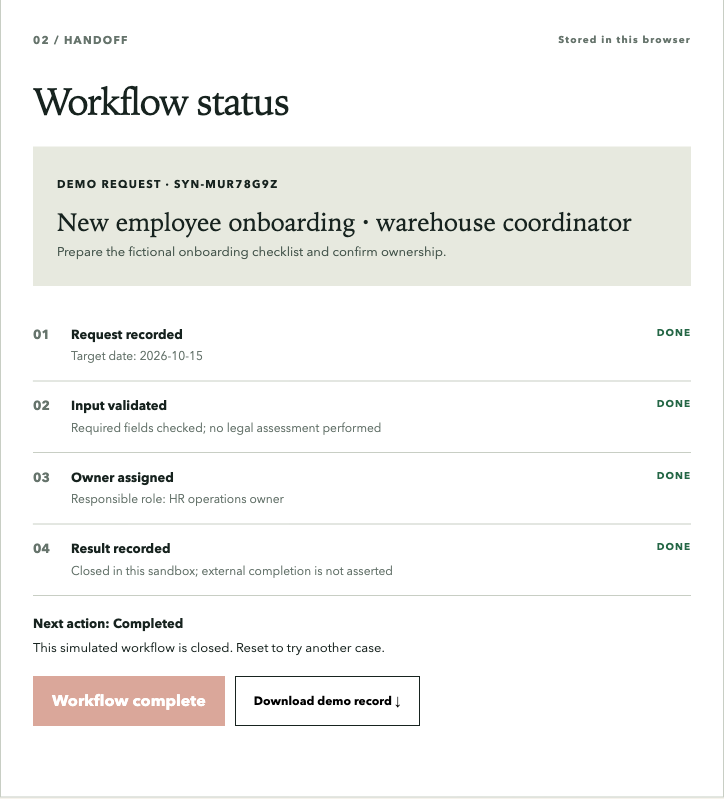

Context and problem
KadrLine is an HR services practice. A static explanation of services does not demonstrate how an employer moves from uncertainty to an actionable personnel workflow. The existing risk-map implementation asks structured questions, validates answers, scores risk zones on the server and prepares follow-up through task and email integrations. A read-only API health request returned HTTP 200 with SMTP and WEEEK configured on 2 October 2026; submission and delivery were not tested.
The public site uses Tilda. In this audit environment, its protection layer returned HTTP 402, so the external questionnaire and production delivery could not be verified end to end. That is an access limitation, not evidence of an outage.
Constraints and decision
Client records, lead details, private integration code and credentials stay outside this portfolio. An HR document generator was rejected as a portfolio priority: it would create legal accuracy risk and would take longer to make trustworthy. A small, synthetic workflow makes the operating model inspectable without exposing the commercial system.
Reviewer sandbox: create a fictional request, validate the input, assign a responsible role, record a result and export the demo trail. It runs entirely in the browser and does not send data to KadrLine or WEEEK.
Open the existing public eight-question checklist ↗ In a browser check on 2 October 2026, fictional answers reached an automatically generated result without submitting the contact form. Its legal and price copy was not revalidated for this portfolio review; the result is a preliminary checklist, not a legal assessment.
Open the public HR cost calculator ↗ Its result is an illustrative model, with salary and tax assumptions outside this review.

Implementation and architecture
The private risk-map source has a bounded HTTP API, validation, deterministic scoring, best-effort idempotency and adapters for WEEEK tasks and email. The public sandbox is separate: static HTML, CSS and JavaScript with localStorage persistence. It illustrates an operations handoff rather than reproducing the private scoring logic.
There is no automatic legal conclusion and no automated employment decision. A human remains responsible for interpreting the result and taking the next action.
Read the public technical overview ↗
What I directed and what AI did
- Product direction: focus on one complete, inspectable HR operations flow and synthetic data.
- AI/Codex implementation: audited the source, built the separate reviewer sandbox, documentation and browser checks.
- Verification: Worker package tests passed 26/26, including fictional WEEEK and SMTP delivery-flow checks, replay and SMTP failure; these local mocks do not prove live delivery. Live API health returned 200 and allowed-origin preflight returned 204. The existing public eight-question checklist reached a result with fictional answers. The sandbox was tested from input through completion, reload and JSON export.
- Acceptance boundary: the checklist contact form, live Tilda risk-map flow, WEEEK delivery and email delivery were not tested from this environment. The checklist’s legal and commercial copy was not revalidated. The earlier analytics Content Security Policy errors were fixed in Site version 11; version 12 distinguishes a confirmed email send from a replay with unknown email delivery. The deployed HTML for both forms returned HTTP 200. Business impact is not measured.
Problems found and iterations
Browser QA found horizontal overflow in the sandbox workflow graphic and a completed step labelled as current; both were corrected before publication. A later browser check exposed a blocked browser-storage failure; the sandbox now keeps the current request usable in memory and marks changes as unsaved. The existing public checklist and calculator also logged blocked Yandex Metrica requests. A narrow Content Security Policy update in Site version 11 removed those console errors in fresh loads. Version 12 also corrected the form message after an idempotent replay, which previously could promise an email even after an SMTP failure. Version 14 aligned the calculator with the price workbook: the lower-bound add-on is now counted for each additional legal entity, and the result is labelled as a model difference. A live browser check used three entities, reached 50,000 ₽/month and showed no mobile overflow or console errors. The salary/tax assumptions, live lead delivery and legal copy remain outside this check. Version 16 then fixed a copy drift found in QA: the screen had retained an old embedded result while the server and email used revised wording. The build now embeds one shared copy source. All 26 local tests passed, and eight fictional answers reached the updated result in a local desktop browser. Native deployment succeeded. A later live Chrome run completed eight fictional answers and displayed the revised result at 390 px without horizontal overflow or console errors; no contact form was submitted.
Result and learning
The portfolio now contains a safe interactive explanation of the request-to-result logic. The strongest evidence is workflow structure and tested local behavior; the next technical gate is an authorized end-to-end submission and delivery readback.